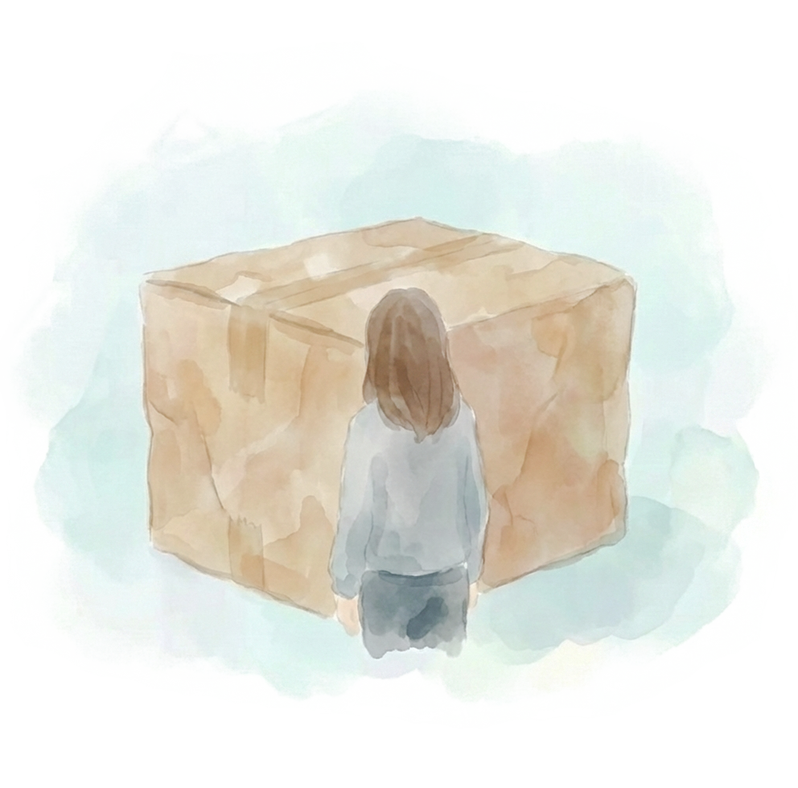

Why I started "Yuiyui"
"If only there was someone I could rely on..."
Nice to meet you.
I am Suganuma, the owner of Handyman Yuiyui.
A few years ago, I moved to my beloved Okinawa.
Surrounded by the blue sea and warm-hearted people, I was full of hope for my new life. However,
I soon faced a harsh reality: I had no one to turn to for help.

There were days when I was too sick to move, and times when I stood helpless before heavy luggage I couldn't possibly move on my own.

With no friends or relatives nearby, I spent many lonely nights wondering,
"Who can I call for such a small thing?"
"I just need a little help."

In Okinawa, there is a beautiful word: "Yuimaru" (the spirit of mutual help).
Back then, what I desperately needed wasn't a professional service from a large corporation, but
simply a neighbor who could lend a hand when I was in a bind.

"I want to help those who, like me, are working hard but have no one to rely on."
"I want to help turn loneliness and anxiety into peace of mind and smiles."
With these thoughts in mind, I established Handyman Yuiyui.
"Is it okay to ask for such a small thing?"
Please feel free to reach out to me, just as you would ask a relative or a friend.
I am here to bring the spirit of "Yuimaru" to your life.